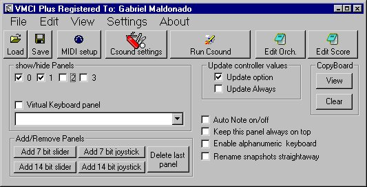
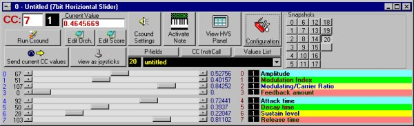
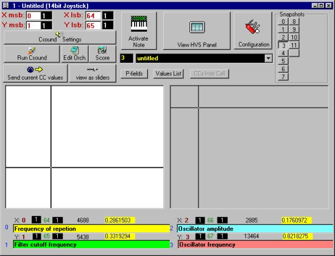
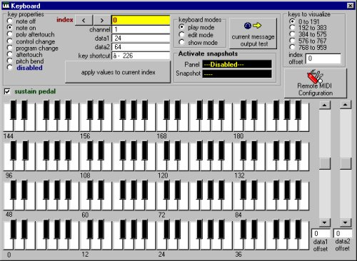
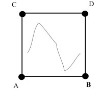
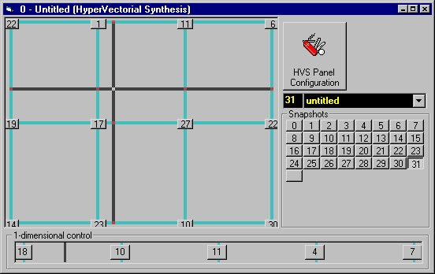

VMCI (Virtual Midi Control Interface) is a program which allows to control any kind of MIDI parameter by means of the mouse and the alpha-numeric keyboard. VMCI has been designed to be used together with DirectCsound, a real-time version of Csound, but can also be used to control any kind of MIDI instrument. It provides several panels with virtual sliders, virtual joysticks and virtual-piano keyboard. The newer version of the program (VMCI Plus 2) allows the user to change more than one parameter at the same time by means of the new Hyper-vectorial synthesis control. VMCI supports seven-bit data as well as higher-resolution fourteen-bit data, supported by the newer versions of Csound.
Csound is one of the most famous sound-synthesis languages. At first it could only synthesize sounds in deferred-time, but now it can be controlled in real-time via MIDI as a musical instrument.
Standard hardware MIDI controllers (such as master-keyboards and fader consoles) allow the user to modify only few parameters at a time; so changing more than one of them in parallel (in the case of sounds with many variant parameters) is not by any means an easy task. Furthermore hardware fader banks rarely allow the user to save and restore the exact configuration of each fader position, which is a very important feature when developing a timbre of a certain degree of complexity, as a Csound instrument can require dozens of variant parameters, and each parameter can be adjustable by the user.
It is important to understand that a Csound instrument can be compared more to a hardware synthesizer rather than to a synthesizer patch. In fact, the timbre of a note produced by a Csound instrument can be very different from that of another note produced by the same instrument, according to the p-fields values (when working in deferred-time), or according to the MIDI controller messages sent to Csound by a performer playing a real-time MIDI session.
So, a hardware synthesizer patch can be compared to the configuration of the changeable parameters of a Csound instrument. If the musician finds a good timbre while adjusting these parameter manually, via real-time MIDI, then he would expect to restore all of his work when he starts a new Csound session.
For this reason I think that computer programs dealing with these kinds of problems are very handy when working with Csound in real-time.
VMCI is intended to accomplish two tasks:
There are two versions of VMCI, the 1.2 (freeware) and the 2.0 (named VMCI Plus, shareware). The latter provides the Hyper-vectorial synthesis panel, which can be used to change hundreds of parameters with a single mouse movement.
In this paper we deal with VMCI Plus version 2 (shareware). Some of the information dealt here is still valid for the earlier freeware version, although there are many extra features.
The VMCI program consists of several windows. When VMCI starts, the activation bar appears. The activation bar is made to create the other windows, to set-up the MIDI port and other Csound-related features, to save and load setup-files (VMCI setups are files including all of the user's configuration parameters), to show/hide existing windows, and to activate/deactivate some program actions (Fig.1).

Figure 1 the activation bar.
The activation bar provides several buttons whose functions are: starting Csound, opening the orchestra and score file and editing them, opening and clearing the copy-board (a text area used to store some useful textual information concerning current slider configuration), and to accomplish some other activities.
Also, VMCI provides several classes of panels related to the modification of MIDI controller data:

Figure 2 The 7 bit slider panel.
Slider panels and joystick panels allow the user to create a new window, the Hyper-Vectorial panel (fig.5).
Slider panels contain a variable number of sliders (i.e. scroll-bars) that can be defined by the user.

Figure 3 The 14-bit joystick panel.
Each slider is associated with a MIDI control-change message, so a stream of messages is sent to the MIDI OUT port (that can be defined by the user) when the user modify the corresponding slider position.

Figure 4 The virtual keyboard panel.
Up to 64 sliders can be visualized in a single panel at a time, but the visible sliders are only a part of the total number of controllers that can be handled by each panel. In fact, each panel can be linked to up to 2048 control-change messages (128 control numbers x 16 MIDI channels).
Joystick panels are similar to slider panels, but with joystick panels the user can modify two parameters with a single mouse movement: the horizontal and vertical axis of a joystick area can be associated with any control change message of any MIDI channel as well can the sliders in the case of slider panels. It is possible to switch a slider panel, turning it directly into a joystick panel, by means of a single mouse click, in this case the current positions of each slider are instantly converted according to the positions of the lines of the corresponding joystick areas, as no information of the current parameter configuration is lost.
There are two kinds of panels: low resolution panels, with seven-bit data and high resolution panels with fourteen-bit data (only seven bits are used in each byte of MIDI data). Each slider of high resolution panels sends a couple of MIDI control messages, the first corresponding to the most-significant byte, the second to the less- significant one.
In Csound there are some opcodes that can handle these couple of messages in the correct way, interpreting them as a single fourteen-bit number and scaling the opcode output within a minimum-maximum range defined by the user. The minimum-maximum values can be defined in the VMCI panels too, so the user can view the actual scaled value of each sent MIDI message as interpreted by Csound (the scaled value is shown within a text area whose text can be copied and pasted to another file for any purpose).
When the user reaches an interesting slider configuration, he can store it inside a 'snapshot'. Up to 128 snapshots can be contained in a single panel. Each snapshot can be instantly recalled by a mouse click; in this case all the control messages corresponding to each slider position are instantly sent to the MIDI out port. Each snapshot can be associated with a text string defining its name, so a panel can be considered also as a "bank of patches", in which each patch corresponds to a snapshot. When a VMCI setup file is saved to the hard-disk, all the snapshots are saved as well and can be restored when loading that file again.
Each one of slider/joystick panels is parent of another panel, called "hyper-vectorial synthesis panel"; the user can open or close it by clicking a special button placed in the parent panel. Hyper-vectorial synthesis panels allow the user to vary many parameters at the same time, with a single mouse movement.

Figure 5 Vectorial synthesis according to Korg.
I called this kind of action "hyper-vectorial synthesis", deriving its name from the vectorial synthesis used in some MIDI synthesizers such as the Korg Wavestation. The "vectorial" term is referred to a path traced by a joystick in a squared area which is bounded by four points (A-B-C-D), each one representing a different sonic configuration (see fig.5). (With the term "sonic configuration", I mean a set of synthesis parameter values that produce a determinate timbre). When the joystick path touches one of these points, the resultant timbre is the sonic configuration set for that point. When the joystick path covers any other location of the plane, a sound corresponding to a scaled combination of the timbres of the four points A-B-C-D is generated; actually, this sound is the resultant of the instant distance of the path from each one of A-B-C-D points.

Figure 6 VMCI hyper-vectorial synthesis panel.
In the case of Korg Wavestation, the vectorial synthesis is generated by means of a simple amplitude-crossfading of four pre-generated sounds (corresponding to the A-B-C-D points); in this case the only parameters to be modulated are the amplitudes of the four sounds themselves.
In VMCI Plus this concept is hugely extended. First, a vectorial area which can contain more than four sonic-configuration points is introduced (see fig.6). I called these points "breakpoints". Second, each breakpoint corresponds to a snapshot containing all slider positions of a panel. Consequently, each breakpoint contains the values of many different parameter values (in theory up to 2048 seven-bit values, 1024 when using fourteen-bit data); each one of the controller positions contained in a breakpoint can be related to any kind of synthesis parameter (not only amplitude-crossfading as in the case of Korg) according to the corresponding Csound instrument. So a massive amount of synthesis parameters can be varied by means of a single mouse-drag action; the only limits are computer processing speed and MIDI transfer bandwidth.
If we consider a variant sound-synthesis parameter as a dimension of an N-dimensional space, we can consider a synthesized timbre as a determinate punctiform location of that space. If a synthesized sound changes its timbre continuously, we can compare that sound to a point moving inside the corresponding N-dimensional space. The number of dimensions of that space is determined by the number of variant synthesis parameters. For example, a note generated by a Csound instrument, in which there are only two user-variant parameters (for example pitch and amplitude), can be considered as a point of a two-dimensional space, i.e. a point of a plane area.
Until now, the configuration of most western music is based on a two-dimensional plane area, because only the pitch and the time displacement of each sound event can be written in a standard music score (amplitude of notes can be considered as a third dimension, but standard western music notation system doesn't allow to define this parameter with precision, so it is often quite aleatory and practically left to the performer's taste).
Computer music opens the possibility to compose with any number of variant parameters, and in particular Csound provides two ways to work with them: [1] discrete initialization-parameters (for example standard score p-fields) and [2] continuous-parameters, that can be driven by mathematical functions or by real-time user gestures transferred to Csound by means of MIDI or other protocols (for example, MIDI slider consoles, mouse or graphic tablets). In the present version of VMCI, it is possible to use the mouse to move a point inside a sonic-space of up to 2048 dimensions (obviously this is a theoretical number, actual MIDI bandwidth limits this value). Apparently, the motion of that point is somehow bounded (by the previously-defined configurations of the breakpoints), but as breakpoint configurations are defined by the composer himself, this bond can't be considered a limit, but a compositional feature.
At this point I must clarify a concept: there are two distinct kinds of spaces we deal with using VMCI:
User-pointer-motion space is the space in which the user moves the mouse pointer (covering its path). In the VMCI hyper-vectorial synthesis panel there are two areas related to that kind of space: a two-dimensional area and a uni-dimensional area. The user can add up to 128 breakpoints in each of these two areas (the actual limit is screen resolution). The next versions will support three-dimensional user-pointer-motion spaces (see next section).
Sonic-variant-parameter space is a theoretical space in which each variant parameter of the synthesized sound represents a dimension. For example, in the case of a Csound instrument which takes eight p-fields from the score (besides the action-time and duration of each note), this space has eight dimensions. In the same way, in the case of a Csound instrument which contains, for example, eleven opcodes that return MIDI controller positions, the corresponding timbre can be considered as contained in an eleven-dimensional space.
A user-pointer-motion space can be considered also as a projection or a section of a sonic-variant-parameter space, because the latter normally has a greater number of dimensions.
Present version (VMCI Plus 2.0) implements hyper-vectorial synthesis in two user-pointer-motion areas : uni-dimensional and two-dimensional mouse areas. These areas can be controlled with the mouse or by a remote MIDI device capable of sending control-change messages. Next versions of VMCI will implement hardware joystick support in order to provide a tactile device to control hyper-vectorial synthesis. Also, the next versions will allow to control it by means of virtual reality devices. V.R. devices will add the possibility to move the user pointer in a three-dimensional space.
Higher resolution slider panels are expected in next versions too, as at present time Csound can handle up to 21-bit MIDI control data (consisting of three 7-bit bytes).
Also some network protocols will be supported as an alternative to MIDI. This will allow to send floating-point data and a will have a higher bandwidth than MIDI.
Freeware and shareware versions of VMCI, as well as DirectCsound can be downloaded from my site:
http://csounds.com/csoundav/
Interested people can also contact me at the following email addresses:
g.maldonado@agora.stm.it
g.maldonado@tiscalinet.it
Goto Main manual